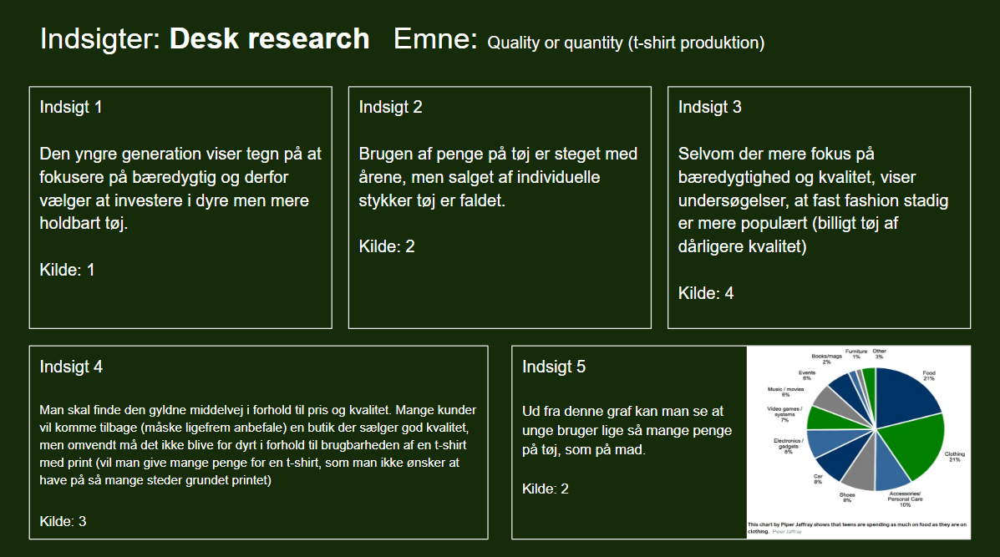
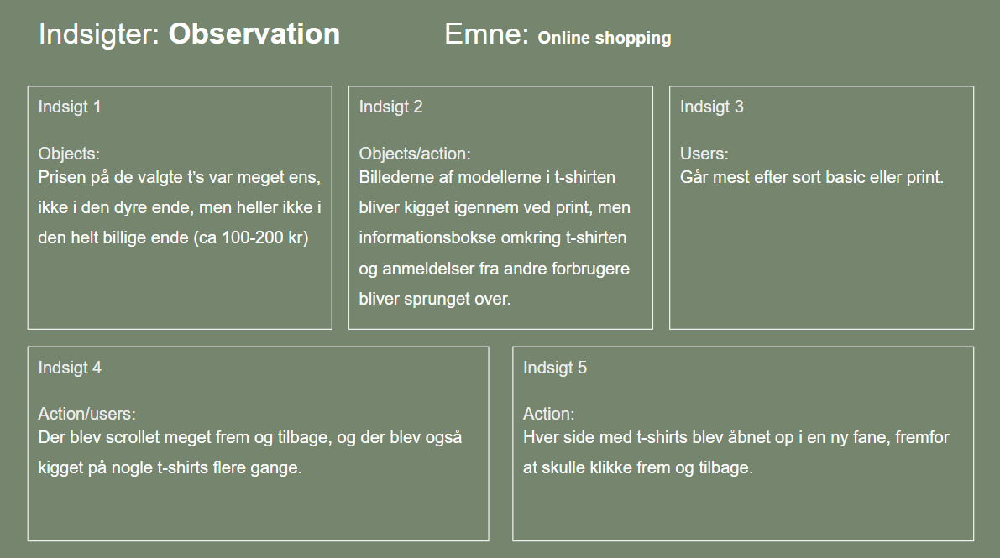
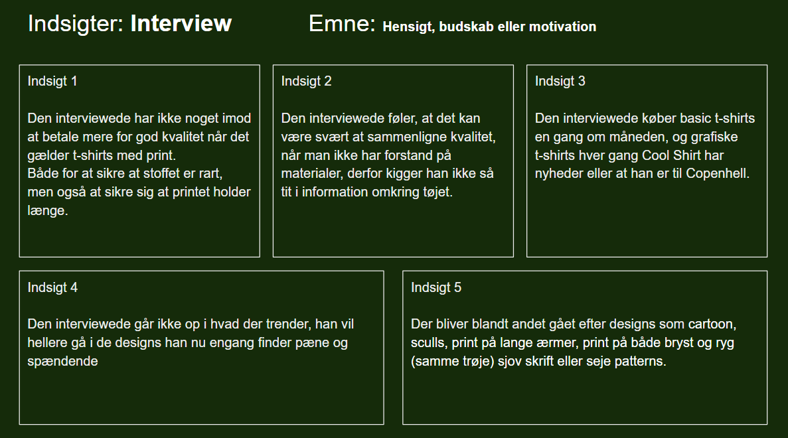
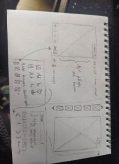
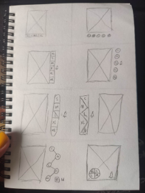
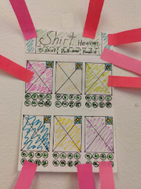
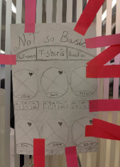
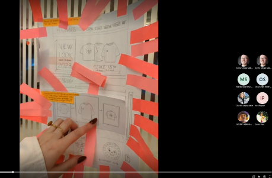
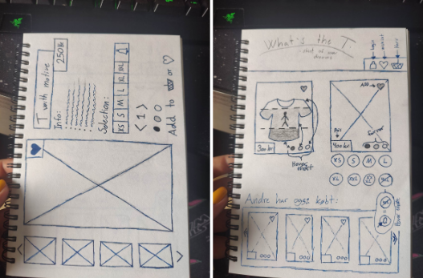
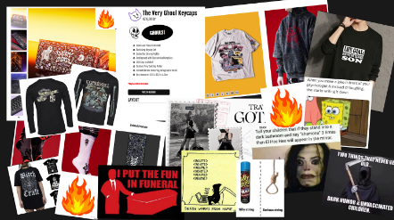

Tema 3
I dette tema lærte vi grundlæggende om UX/UI og hvordan vi kan bruge research, test og brugerinddragelse til at forbedre vores produkt, i forhold til ting der ikke fungerede så godt som man selv troede eller gode ideer man selv havde overset.
Den overordnede case for temaet omhandler en “fiktiv” onlinebutik, der ville sælge t-shirts. Vores opgave blev at benytte de forskellige metoder, samle det til en prototype af en hjemmeside og pitche det for klassen.
Her er lidt om de forskellige metoder/programmer, delt op i faser, og hvordan jeg har brugt dem i den endelige opgave.
Konceptfasen
Vi startede hele temaet op med at finde på et koncept til butikken, hvem er vi som brand (afsender), hvem vil vi gerne vil nå ud til (modtager/målgruppe), hvordan vi gerne vil markedsføre brandet og hvad vi gerne ville sælge (selling propositions).
Afsender
Alternativ tøj side der sælger t-shirts med citater og illustrationer. Det er dark humor/ satirisk humor fx. en t-shirt med teksten “I’d rather set myself on fire” sammen en illustration af en person i meditationsstilling i en kæmpe flamme. Det er en lille online butik, som ønsker at flere kommer forbi og køber t-shirts eller at tidligere købere kommer forbi igen for at købe flere t-shirts.
Målgruppe
Produkterne kommer nok mest til at henvende sig til folk der er meget på nettet og ser memes (især dark humor memes) så køn og alder spiller ikke rolle her. Hele ideen er at man har meme formatet på print i stedet for på nettet og på den måde kan sprede grin og smil og man kan få lov at sprede lidt ironi, køberen er derfor nok mest en person som ikke har noget imod at folk kommentere på deres valg af t-shirts fordi t-shirten gerne skal skille sig lidt ud i forhold til hvad andre har på.
Produkter
Produkterne kommer til at inkludere, t-shirts (mand/kvinde) jumpers (unisex) og hættetrøjer (unisex) med og unden lynlås (dem med lynlås får print på ryggen). Der kommer til at være fokus på kvalitet af stof og print, men det skal stadig holdes på et fornuftigt prisleje. Der kommer til at være mange forskellige størrelser at vælge imellem, men farvevalget kommer til at være begrænset til sort, mørkegrå eller hvid.
Researchfasen
Vi blev præsenteret for forskellige metoder til at undersøge og få viden, vi senere kan bruge til at definere vores produkt. Som opgave fik vi 3 emner at vælge imellem for hver metode, som vi skulle arbejde ud fra.
Desk research
Vi hiver en masse information til os fx. findes der noget lignede et andet sted, er der efterspørgsel på vores produkt, hvad er folk villig til at betale, hvad går de op i at produktet står for (genanvendelighed, fairtrade, diversitet bl.a.) Jo mere, jo bedre og gerne forskellige synspunkter så vi kan få et overblik og konklusion.
Jeg valgte selv A. t-shirt produktion i desk research. Her lagde jeg fokus på at undersøge quality eller quantity, i forhold til hvad der var mest salg i, vil det give mening at lave en dyr t-shirt af høj kvalitet (vil den sælge) eller sælger det bedre hvis prisen ikke er for dyr og dermed gå på kompromis med kvaliteten.
Det jeg gjorde var:
- Google og skimme alle de artikler der kom frem
- Sortere i artiklerne i forhold til information og afsender (kildekritik)
- Lave en liste med links og en kort beskrivelse af indhold
- Lavet en konklusion ud fra hvad de forskellige links, pdf’er og billeder
Indsigter fra desk research
Surveys
Bruges til at samle et stort datasæt omkring den brede befolknings meninger og holdninger fx. til kvalitet, pris eller design. Jeg fik ikke selv lavet en survey, da vi lavede en samlet i klassen, men da jeg skulle bruge informationerne bagefter kunne jeg ikke finde dem. Men en survey her kunne have været rigtig god til at få et større datasæt omkring hvad folk har lyst til at betale for t-shirts og hvilken forventning der er til kvalitet, samt få en fornemmelse af hvilken stil/type t-shirts der er størst interesse i.
Observation
Bruges til at observere folk benytte lignede produkter, se om man kan få øje på et mønster, mimik eller andet der kan være vigtig i forhold til forstå den brugeroplevelse de har, eller de valg de ubevidst træffer.
Som observation valgte jeg C. online t-shirt shopping. Mit koncept gik ud på kun at være en online shop, derfor synes jeg det var en god ide at observere hvordan brugeren kommer rundt på en online t-shirt website.
Det jeg gjorde var. Jeg satte mit tv op med min kærestes computer så jeg kunne se ham, men også tydeligt se hvad han kiggede på, og skrev noter om hvad jeg observerede. Jeg bed mærke i nogen ting i forhold til min desk research om quality or quantity:
- Der blev shoppet efter interesse, og ikke hvad der var billigst, men mange af de dyre produkter blev også undgået.
- Der blev ikke kigget i information omkring kvaliteten eller i brugeranmeldelser.
Indsigter fra observation
Indsigter fra interview
Interview
Man kan også vælge at inddrage et efterfølgende interview, hvor man dybdegående kan spørge ind til de ting man gerne vil have viden mere om, fx. hvorfor valgte du den frem for den anden. Jeg valgte B. hensigt, budskab eller motivation (som bruger af t-shirts). Jeg valgte den interviewform, fordi jeg kunne stille spørgsmål som opstod i observationsfasen, samt få en uddybet mening omkring hvad der blev søgt efter.
Jeg startede med at lave en interviewguide med spørgsmål, som jeg kunne bruge i mit interview, og på en anden side skrev jeg noter til svarene (jeg glemte dsv at optage interviewet) bagefter renskrev jeg på computeren.
Jeg fandt ud af at der var interesse for, at bruge ekstra penge på kvalitet af grafiske t-shirts, frem for basic t-shirts. Og at det kan være svært at sammenligne kvaliteten online, når man ikke har viden om stof og kvalitet.
Designfasen
Når vi har en masse data efter researchfasen og lavet indsigt drevet beslutningsproces, kan vi gå i gang med design ved at lave sketches, moodboard, styletile.
Her kan man blandt andet gøre brug af forskellige teknikker, til at starte den kreative proces, som lightning demo/ideas (sæt 10 min af og skitser nogle ideer ned). Crazy 8 hvor du folder a4 så det danner 8 rum,og så skitserer du på en ide i 1 minut. går videre til næste rum og skitserer samme ide, men et nyt tiltag i 1 minut. Når alle rum er nådet har man 8 forskellige designs af samme grundide. Solution sketch hvor man laver en mere gennemgribende “pæn” sketch af sin ide, derefter kan man lave heat map med venner og deres solution sketch og blive enige om hvilken ide der er bedst (god hvis man arbejder i gruppe).
Til sidst kan man lave en speed critique af nogle solution sketches, hvor man gennemgår hele designet (hvad er godt, hvad virker knapt så godt, kunne man sammensætte de her to ideer eller andet). Men kan eventuelt sammensætte gode ideer fra speed citique til en 2. iteration af solution sketch (en løsningsprototype).
Her har jeg lavet et lille galleri med mine skitser, prototyper og andet godt.
Lightning demo
Crazy 8s
Solution sketch
Muesuem heat map
Speed critique
2. iteration af solution sketch
Moodboard
Prototyping og test
Når vi har en masse sketches, et moodboard der fanger stemningen af ideen/produktet og et styletile der viser det endelige design, kan vi lave prototype i Adobe XD som kan bruges til test i målgruppen eller til en pitch fremlæggelse.
I XD kan man lave en animeret prototype der fungere på et lavpraktisk plan og som viser blandt andet hvordan hjemmesiden vil komme til at se ud og hvordan den vil fungere (eller et andet produkt, nu arbejde vi bare med tøj design og hjemmesider i dette tema).
Linket her, vil tage dig til en ny fane med min prototype i XD (jeg har dsv ikke en animeret udgave) Men man får stadig en god fornemmelse af hvordan det hele vil ende med at se ud.
Pitch
Når vi har samlet alt vores viden, lavet sketch og design, lavet en prototype af produktet og eventuelt lavet en test af produktet, er det blevet tid til at pitche.
En pitch er en fremlæggelse (for en chef, kunde eller andet) hvor man fremviser de vigtige dele af de forskellige faser, design og prototypen. Det er her man skal sælge sit produkt til videre produktion, og det er derfor det ikke er vigtig om selve konceptet/produktet er færdigt endnu, så længe der er nok materiale til at man kan pitche om hvor god en ide det er.